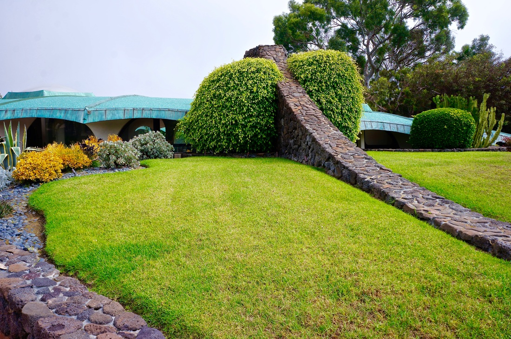

La Jolla Landscaping Services
Coastal Landscaping Designed for La Jolla Living
La Jolla sits on one of the most spectacular stretches of coastline in Southern California. The name itself -- Spanish for "the jewel" -- sets the expectation for every property in the community. From the bluffs above Windansea Beach to the winding streets of the Muirlands, La Jolla homeowners take pride in outdoor spaces that match the beauty of their surroundings. That is exactly where Arcadian Landscape comes in.
The coastal microclimate in La Jolla creates a unique set of conditions for landscaping. Ocean breezes carry salt spray inland, especially in neighborhoods closest to the water like La Jolla Shores, Bird Rock, and the area around the Cove. Plants that thrive a few miles inland can struggle here without proper selection and placement. We design specifically around these conditions, choosing species like Agave attenuata, Leucadendron, coastal rosemary, Westringia, and New Zealand flax that handle salt air without losing their visual appeal. For hillside properties above La Jolla Village, where exposure to wind is more intense, we incorporate windbreak plantings and terraced beds that protect more delicate specimens while preventing soil erosion.
Soil conditions in La Jolla vary significantly from one neighborhood to the next. Properties along the coast often sit on thin, sandy soil over sandstone, which drains quickly but lacks nutrients. Inland sections toward the Country Club and La Jolla Alta feature heavier clay soils that retain moisture and can cause root rot in plants that prefer drainage. We perform soil analysis before every project and amend accordingly -- adding organic compost and proper drainage layers so your plants establish strong root systems from day one.
Many La Jolla properties are governed by homeowners associations or architectural review boards, particularly in planned communities near La Jolla Country Club, the Muirlands, and newer developments along La Jolla Scenic Drive. These organizations often have specific guidelines about plant heights along property lines, hardscape materials, irrigation runoff, and even the percentage of lawn versus drought-tolerant plantings. We work within these restrictions regularly and can navigate the approval process so your project moves forward without delays.
Mediterranean-style landscaping is a natural fit for La Jolla. The climate mirrors the Mediterranean basin -- mild, wet winters and warm, dry summers -- which means lavender, olive trees, bougainvillea, Italian cypress, and rosemary all perform beautifully here. We pair these plantings with natural stone hardscaping, decomposed granite pathways, and terra cotta accents to create spaces that feel connected to La Jolla's architectural heritage. For homeowners who prefer a more contemporary look, we also design clean-lined succulent gardens, minimalist water features, and modern paver installations that complement the mid-century and modern homes found throughout Bird Rock and the Shores.
Drought tolerance is not optional in La Jolla -- it is a design principle. San Diego's water restrictions apply across the board, and La Jolla properties are no exception. We design landscapes that use 50-60% less water than traditional lawns by integrating smart irrigation controllers, drip systems, permeable paving, and plant palettes built around California natives and Mediterranean species. Many of our La Jolla clients have eliminated traditional grass entirely, replacing it with artificial turf for play areas or decomposed granite for low-maintenance pathways. The result is a landscape that looks lush year-round without the water bill.
Whether you are renovating a mid-century Bird Rock bungalow, building out the backyard of a La Jolla Shores family home, or designing the grounds of an oceanfront estate above the Cove, Arcadian Landscape brings the local knowledge and design expertise that La Jolla properties demand. We have worked throughout this community for over a decade, and we understand that every block has its own character, its own exposure, and its own set of opportunities.
Landscaping Services in La Jolla
Landscape Design
Custom design plans tailored to La Jolla's coastal climate, your property's exposure, and your vision for outdoor living.
New Construction
Complete landscape installation for new builds, from grading and drainage to final plantings and lighting.
Hardscape
Retaining walls, stone pathways, seat walls, and structural elements built to handle La Jolla's coastal conditions.
Water Features
Fountains, ponds, and cascading water walls that add ambient sound and visual interest to your garden.
BBQ Islands
Custom outdoor kitchens and BBQ islands designed for La Jolla's year-round entertaining weather.
Patios & Decks
Patio extensions, elevated decks, and covered outdoor rooms that expand your living space outdoors.
Pavers
Interlocking pavers, natural stone, and porcelain tile installations for driveways, walkways, and pool decks.
Landscape Lighting
Low-voltage LED path lights, uplighting, and accent lighting to showcase your landscape after sunset.
Planting
Salt-tolerant, drought-resistant plant installations selected specifically for La Jolla's coastal microclimate.
Irrigation
Smart irrigation systems with weather-based controllers and drip zones that conserve water and keep plants healthy.
Artificial Grass
Premium synthetic turf for lawns, play areas, and pet zones -- zero water, zero mowing, always green.
Landscape Renovation
Transform tired, outdated yards into modern outdoor spaces that reflect La Jolla's coastal elegance.
Why Arcadian for La Jolla
Arcadian Landscape is based in Cardiff-by-the-Sea, just a short drive north of La Jolla along the coast. We know the salt air, the sandy soils, and the architectural standards that define this community. Our team has completed projects throughout La Jolla Shores, Bird Rock, the Muirlands, and the Village area, giving us firsthand experience with the conditions and expectations unique to each neighborhood.
Owner Evan Weisman personally oversees every La Jolla project from design through installation. No subcontractors guessing at your vision. No generic plans pulled from a template. Every design is drawn for your specific property, your specific exposure, and the way you actually use your outdoor space. That is the Arcadian difference.
La Jolla Landscaping FAQ
What plants thrive in La Jolla's coastal climate?
La Jolla's coastal microclimate supports a wide range of salt-tolerant and drought-resistant plants. We recommend species like Agave attenuata, New Zealand flax, coastal rosemary, Leucadendron, and various Echeveria succulents. Native choices such as Torrey Pine understory plants, coastal sage scrub, and Dudleya also thrive in La Jolla's mild, salt-air environment. Our designs balance beauty with resilience to ocean winds and salt spray.
Do you serve La Jolla Shores and Bird Rock?
Yes, we serve all La Jolla neighborhoods including La Jolla Shores, Bird Rock, Windansea, La Jolla Village, the Muirlands, La Jolla Alta, and the Country Club area. We have completed numerous projects throughout La Jolla and understand the unique soil conditions, HOA requirements, and coastal exposure that vary from neighborhood to neighborhood.
How do you handle salt spray damage to landscapes?
Salt spray is a major consideration for La Jolla properties, especially those within a few blocks of the ocean. We design with salt-tolerant plant species, install protective windbreak plantings, and use hardscape materials rated for coastal exposure. Our irrigation systems include flush cycles to rinse salt deposits from foliage, and we can install drip systems that deliver water directly to root zones, reducing salt buildup on leaves.
Transform Your La Jolla Landscape
Ready to create an outdoor space worthy of La Jolla? Contact Arcadian Landscape for a free design consultation.